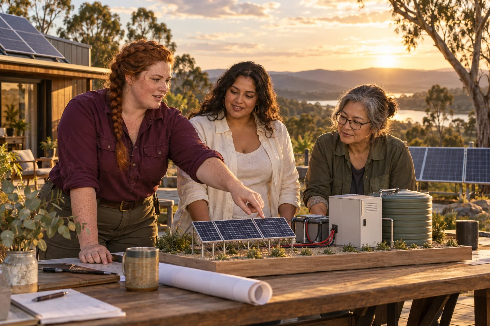

Gather an authorised demand record and define the hours of supply the customer needs.

500 Queens / Pumped Water Storage
Pumped Water Storage
Assess pumped water storage as one option for matching energy supply with the times people need it.
Follow the connections. Choose your direction.
The need worth working on.
An energy system can have plenty of generation at the wrong time. Storage choices must fit the duration, power demand, land, water and operating conditions of a real user. The venture should ask which service is needed before assuming that reservoirs or a particular landscape should be developed.
What the enterprise could offer.
Build a transparent storage comparison using measured loads and explicitly hypothetical site parameters. Include the energy required for pumping, useful electricity returned, water management and the ability to maintain equipment. A local enterprise could provide analysis or operating support without taking on an unapproved civil works project.
People to build with
- Community energy groups
- Facility and microgrid operators
- Energy and water planners
Storage options for one measured load
Model pumped storage alongside demand shifting, batteries and existing supply using consistent assumptions.
Ask civil, electrical and water specialists to identify the constraints a real site would introduce.
Test sensitivity to water availability, efficiency, outages and maintenance costs before recommending further investigation.
The first result
A storage comparison workbook and a site-assessment brief if the option remains promising.
What needs to be demonstrated.
Engineering development
The starting evidence
The catalogue lists pumped water storage as a clean-power enterprise theme, with no site or engineering design supplied.
The open question
Whether the required service and local conditions make this option competitive or appropriate.
The next measurement
Delivered storage service, total energy losses and whole-life operating requirements across realistic scenarios.
Build the means to deliver.
Useful capabilities and resources
- Measured load data
- Civil and electrical engineering input
- Water and land-use information
A possible business model
Offer independent storage assessment and operational planning. Construction revenue is a separate proposition requiring a defined customer, design and permissions.
A leadership decision to practise
Choose how water, landscape and community priorities are weighed alongside the energy calculation.
People, consequences and decisions.
- A convenient elevation model may hide unsuitable ground conditions.
- Water availability may change.
- Civil costs can dominate a small installation.
If equality were being designed now...
- Which services important to women would the storage support, and who chooses priorities during an interruption?
- Can women affected by the water, land and maintenance requirements influence the comparison before a preferred site is promoted?
Begin with women's own experiences across bodies, ages, cultures and places. Invite disagreement and choose a practical change together.
Create a women-led design brief →Build your learning council.


Civilisation PillarRiver Queen
Anglo-Torres Strait Islander
Follow the water, and the people who depend on it.

Build alongside these ideas.
Clean power systemsTidal and Wave Power
Find a coastal energy use that might justify careful testing of tidal or wave technology.
Engineering development
Clean power systemsBattery Technology
Build a battery service around the job the customer needs done and the full life of the equipment.
Practical pilot
Clean power systemsGravity Power
Treat gravity as a possible energy-storage mechanism, with every input and loss counted.
Engineering development
Follow existing public concept work.
Connected public conceptStraddie Clean Energy Superpower
Compare island energy possibilities, from rooftop solar and storage to heat, water and emerging research.
Connected public conceptMinjerribah Living Twin
A browser simulation explores connections between island ecology, services, movement and everyday life.
From the original suggestion to a working brief.
Original concept from 500 Queens VC NEW Long, slide 15; current context from the September 2026 planning document. This expanded brief and pilot are proposed development, not evidence of an operating enterprise or confirmed partnership.
Original title: Pumped Water Storage. The pilot, business model and learning connections on this page are proposed developments of that original idea.